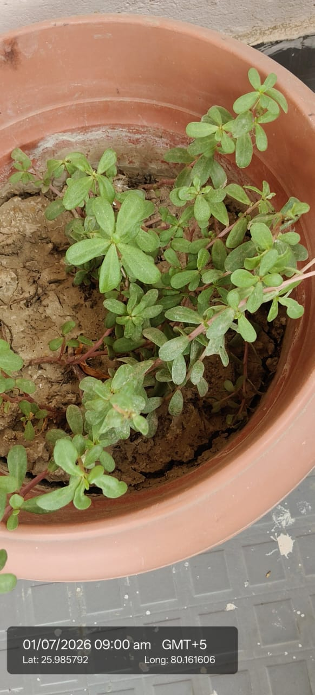

| Kingdom | Plantae |
|---|---|
| Genus | Portulaca |
| Species | Portulaca oleracea |
| Scientific name | Portulaca oleracea |
| Type | Annual succulent herb, sometimes perennial in frost-free areas |
| Category | Herbs |
| IUCN Red List | Least Concern (LC) — IUCN Red List LC |
Habitat & Growing Conditions
- Considered native to North Africa, the Middle East, and the Indian subcontinent
- Now cosmopolitan. Grows as a weed worldwide, very common in India
- Thrives in Kanpur’s hot climate. Loves full sun and poor, sandy, dry soil
- Often pops up on its own in pots, fields, roadsides, and cracks
- Extremely drought tolerant due to fleshy leaves and stems
- Spreads fast as a ground cover

Biodiversity Value
- Grows in poor soil and helps reduce erosion
Economic & Ecological Importance
- Food: Leaves and stems are edible. Rich in omega-3 fatty acids, vitamin A, C, and iron. Used in saag, dal, salads, and raita in UP and Bihar
- Medicinal: In Ayurveda and Unani, used for urinary issues, inflammation, dysentery, and as a cooling agent. Speak to a healthcare professional before medicinal use
- Fodder: Fed to livestock as nutritious green feed
- Ornamental: Wild types are weeds, but flowering varieties are grown as garden plants
- Agricultural: Considered a nutritious “weed crop” and cultivated in parts of India
- Soil benefit: Grows in poor soil and helps reduce erosion
Medicinal Importance
- Used in Ayurveda and Unani medicine for urinary complaints, inflammation and dysentery, and as a cooling agent.
Visual record